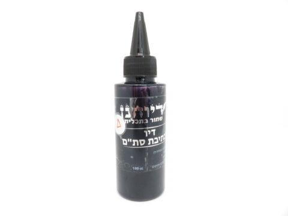
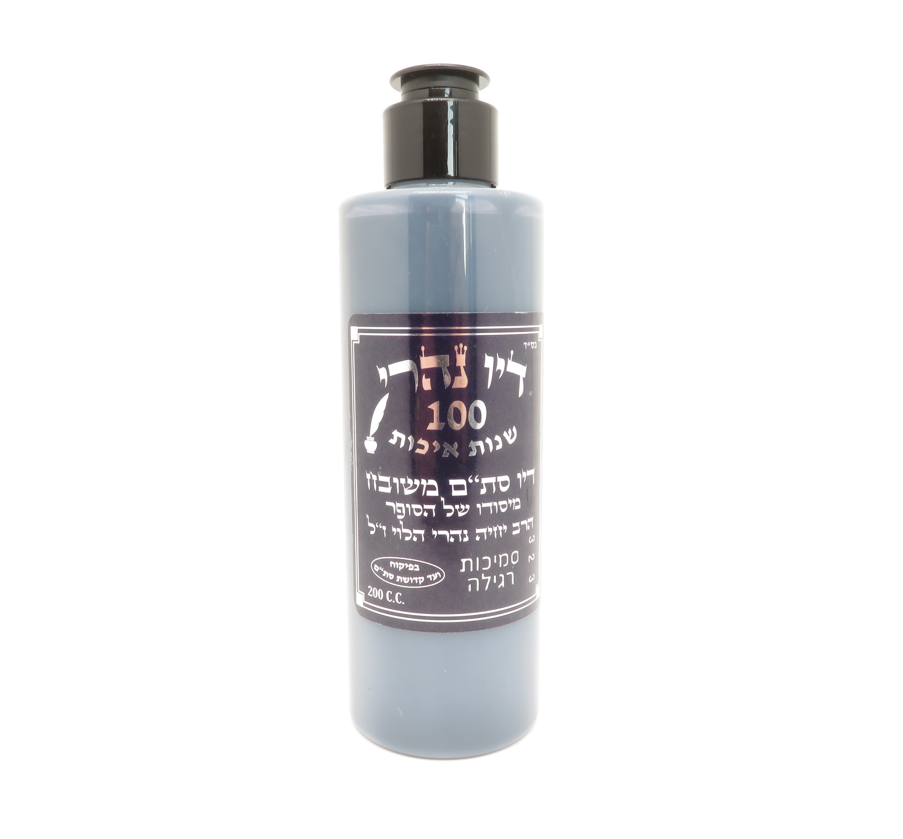
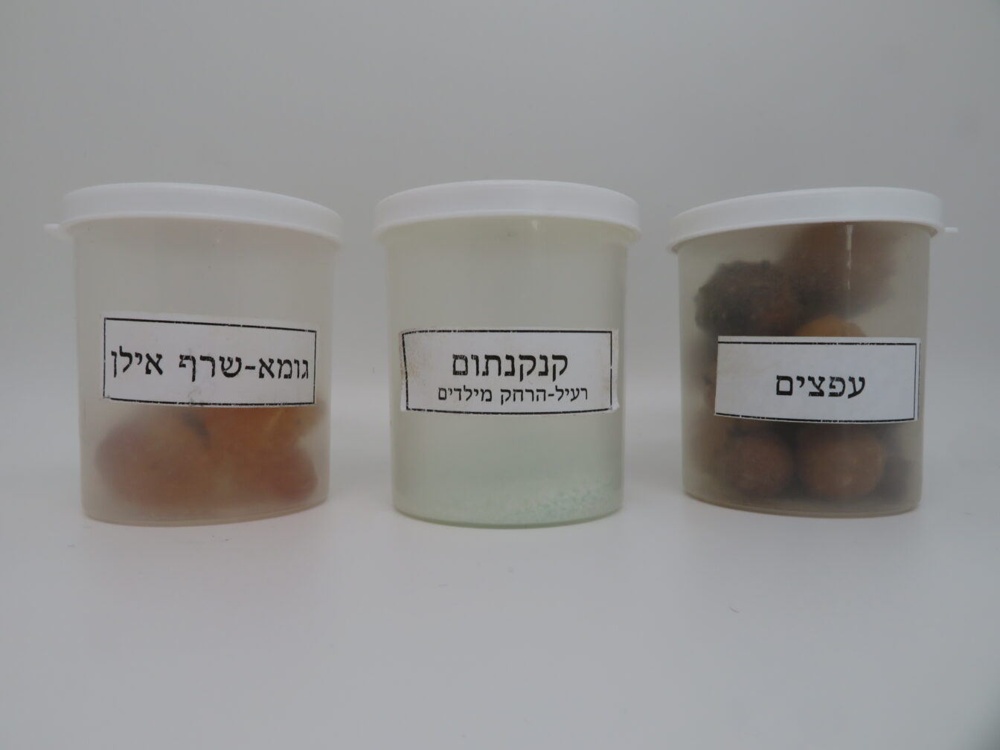

כל מה שצריך לדעת על… דיו לכתיבת סת”ם!


כל מה שצריך לדעת על… דיו לכתיבת סת”ם!
יש סוגי דיו שונים, במה לבחור?
בחנויות הציוד לסת"ם יש כ5 סוגי דיו, כהמלצה אני אומר לתלמידים:
תשתמשו עם מה שכל הסופרים כותבים, 'סוס מנצח לא מחליפים',
אם הסוס הזה ניצח בתחרות, ניקח אותו שוב בתחרות הבאה,
דיו שהוכח כמוצלח במשך שנים איתו נעבוד ובו נדבק…
ככלל לא כדאי לכתוב רק עם סוג דיו אחד, בתחילת הדרך כדאי לשנות,
ברגע שנגמר הבקבוק ננסה חברה אחרת של דיו, עד שנגיע לדיו הרצוי והנח לנו בכתיבה.
סמיכות
הסמיכות של הדיו היא רמת הדלילות והמים שבתוכו,
גם אם נקנה את הסמיכות הכי קלה, עם הזמן המים מתאדים ונשאר החומר המוצק,
והכתיבה בדיו נהיית צמיגית, ושזה קורה נוסיף 2 טיפות מיים, כמו שנכתוב בהמשך…
יש סופרים שאוהבים את הדיו דליל, וזה נח להם למהירות הכתיבה,
ויש כאלה שאוהבים את היציבות של הדיו ולכן הם מבקשים סמיכות גבוהה יותר.
וזה כמובן משתנה גם בין סוג הקלף שאיתו אנו עובדים חלק, שעיר וכו'.
החברות השונות מציעות למכירה סמיכויות שונות,
כדאי להתחיל עם סמיכות בינונית, ולהחליף לסמיכות אחרת לפי ההרגשה.
דילול הדיו
גם אם קנינו דיו בסמיכות קלה, תוך כדי כתיבה כשהקסת פתוחה,
המים שבדיו מתאדים ובפרט בקיץ בימים החמים, ונשאר רק החומר,
הפתרון הוא לשים שתי טיפות מים קטנות ולערבב, פרט זה הוא בסיסי מאוד אצל סופרים.
אם הדיו סמיך מדי יתכן שהאות לא תתמלא בשוה,
תופעה זו קורה מפני שהדיו צמיגי ואינו מתחבר לקלף כראוי.
עצה: המון פעמים ראיתי שהסופרים מתלוננים על הקולמוס או על הקלף,
בעוד שהבעיה בדיו, וכשהוסיפו שתי טיפות מים לדיו, פתאום הכל הסתדר…
עם מדלל דיו, לא מדללים דיו…
כל חנות למוצרי סת"ם מחזיקה בקבוקון דומה לבקבוק הדיו,
שעל המדבקה מתנוסס בגאון שמו 'מדלל דיו', מי צריך את זה? ומה זה?
ראשית נסביר כי מדלל דיו [למיטב הבנתי] הוא דיו מדולל במים בתוספת חומץ או אלכוהול…
כנראה בכדי לבטל את צמיגיות הדיו, וכיון שהוא חומר דומה לדיו,
הוא גם מתערבב איתו בקלות. אך כל סופר יודע שבכדי לדלל דיו מספיק שתי טיפות מים.
טוב! אז מה עוד אפשר לעשות עם מדלל דיו, חוץ מלדלל את הדיו?
שימוש מאוד חשוב יש למדלל אצל הסופרים, שכאשר כותבים הקולמוס מתלכלך מאבק הקלף,
מעודפי הדיו, ולכלוך זה סותם את הקולמוס ומפריע לזרימת הדיו התקינה.
לכן מומלץ ליקח שתי קסתות, באחת דיו, ובשניה מדלל,
וברגע שהדיו נהיה סמיך בקולמוס מלוכלך מעט ואינו זורם,
נטבול בקסת המדלל וננער מעט ושוב יטבול בדיו וכן על זה הדרך.
בל נשכח! רוב החברות שמייצרות דיו יש להם גם מדלל תואם,
יתכן שמדלל של חברה שונה יצור ראקציה וחוסר התאמה עם הדיו, שיפגע בצבע שלו וכו'.
קסת לדיו
קסת היא הכלי שבה מונח הדיו.
למתחילים די בקסת יציבה וחזקה שאינה יכולה להסדק או להשפך, עם נעילה טובה.
בשלב הבא אפשר לקנות קסת בכמה עשרות שקלים,
וכשכבר קונים שלחן טוב לסופרים, נקפיד שיהיה בו זרוע מובנית בשלחן,
שהיא מחוברת לקסת ותלויה באויר, וכמובן יציבה לנוחות הכתיבה.
כדאי שפתח הקסת לא יהיה רחב, כדי שלא יתאדו המיים בדיו במהרה, ובמיוחד בימות הקיץ.
המקום האידיאלי ביותר של הקסת הוא בתחום ה'ציר' של היד,
כדי שלא יצטרך הסופר להרים את המרפק, זהו מאמץ מיותר שמקשה על מהירות הכתיבה, וגורם לעיפות.
טפטפת
יש שמשתמשים בטפטפת, והרעיון הוא פשוט:
כשטובלים את הקולמוס בקסת, יש עליו דיו מהצד הפנימי ומהצד החיצוני,
אולם כיון שהצד החיצוני חשוף לאויר הוא מתיבש הרבה יותר מהר מהצד הפנימי,
וממילא מיבש גם את הפנימי. הבשורה שמביאה עימה הטפטפת היא:
שהסופר מטפטף דיו רק לחלק הפנימי של הקולמוס,
ועל כן הדיו מתיבש בזמן מאוחר יותר ומאפשר כתיבה רצופה יותר.
אך החיסרון הגדול הוא:
שצריך כל פעם להרים שתי ידיים ביד אחת הקולמוס וביד שניה הטפטפת ולמלאות,
העיסוק הזה הוא מורכב מאוד, ולכן רוב הסופרים מעדיפים את מעלת הטבילה על פני חיסרון היובש.
כתיבה מהנה
יוחאי אוחיון
מלמד סופרים בכתב הספרדי
